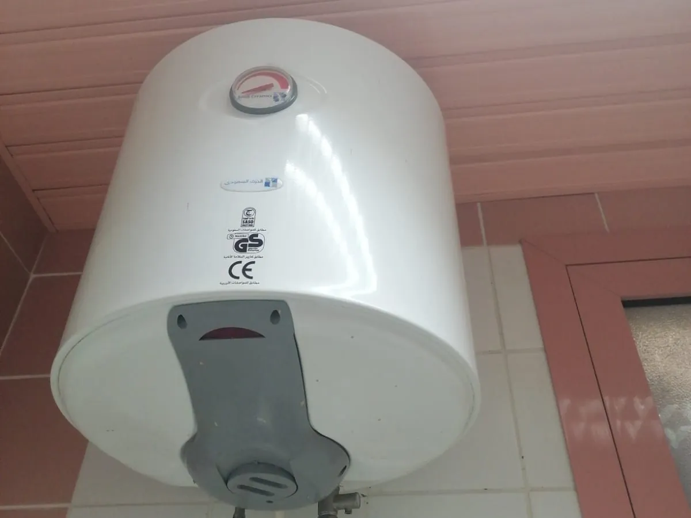

Build a complete asset register first, then set maintenance frequencies by criticality and manufacturer guidance. Track completion rates and repeat faults, and use the data to adjust the plan. Chillers, AHUs and pumps usually offer the biggest energy and reliability gains.
Need this service for your project?
Share your scope and we will send a tailored quotation.
Request a quote